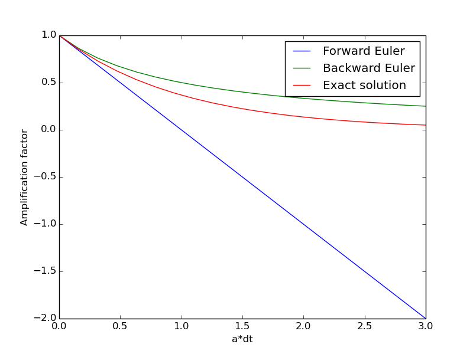
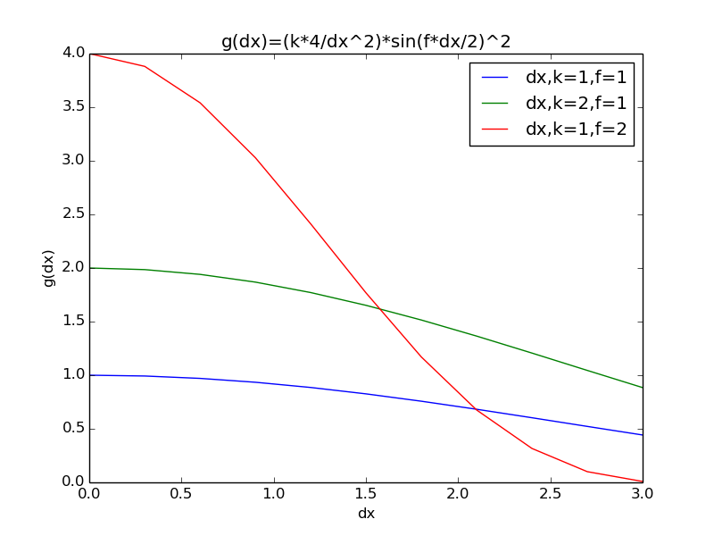

Density-Dependent Diffusion- Reaction Diffusion Model
The efficiency of computers has increased vastly over the last few decades, giving scientists and engineers new tools to describe the dynamics of the world around us. It has also affected the way biological processes are viewed and described. This project will focus on numerical methods to solve the reaction diffusion equation which is described below. Reaction-diffusion systems explain how the concentration of one or more substances changes under the influence of the local chemical reactions, here \( f(u) \) and diffusion which cause a spatial dispersion. These systems are applied in fields as chemistry, biology, geology, physics and ecology.
$$
\begin{align} \label{eq:reaction_diffusion}
u_t =& \nabla \cdot \alpha(u)\nabla u + f(u)\\
u(x,0) =& I(x)\notag \\
u(0,t)=& 0\notag \\
u(L,t)=& 0\notag
\end{align}
$$
This model is a \( \textit{Density-Dependent Diffusion-Reaction Diffusion Model} \), because of the \( \alpha(u) \) function in the diffusion part. When \( \alpha(u) \) is sat to be a constant, the model will be a ordinary \( \textit{Reaction Diffusion model} \) [MB,I,449]. Here, \( u \) denotes the concentration of the substance in one spatial dimension. This project will include a general introduction to the Fisher-Kolmogoroff equation, which is a reaction diffusion equation. To verify the numerical solution, this will be compared to an analytical solution by using travelling wavefront. The last part will be a study on the affect of the reaction and diffusion term.
Fisher-Kolmogoroff equation
The main focus in this project will be at the Fisher-Kolmogoroff equation, now referred as FK . This was proposed as a one-dimensional model by Fisher(1937) to describe the spread of an advantageous gene in a population. Kolmogoroff et al.(1937) did a study of this equation and obtained some of the basic analytical results [1].The FK can be produced by replacing \( \alpha(u)=k \), where \( k \) is a constant, and \( f(u) = ru(1-\frac{u}{M}) \) in the general equation \eqref{eq:reaction_diffusion}.
New version(Based on Introduction to Partial Differential Equations, Tveito-Winther.
An important requirement when running a numerical simulation, is the stability criteria for the function. A technique for this is Von Neumann's Stability Analysis. This technique can be used to find the sizes of \( \Delta t \) and $\Delta x$|
$$
\begin{equation} \label{eq:reac_stab}
u_t = \alpha u_{xx} + Bu
\end{equation}
$$
The concentration \( u \) can be expressed as combinations of \( X \) and \( T \). A separation of variables can be done to the equation. This will give a better control of the time, \( t \), and spatial,$x$, values.
$$
\begin{equation} \label{eq:var_sep}
u_k(x,t) = X_k(x)T_k(t)
\end{equation}
$$
This can now be inserted in \eqref{eq:reac_stab},
$$
\begin{align*}
T_k'X_k =& \alpha X_k''T_k + BX_kT_k
\end{align*}
$$
The next thing that can be done is to divide both sides with the identity \( T_kX_k \). This will give a left side that only depends on \( x \) and a right side that only depends on \( x \). Since both expressions must be equal to a common constant, this can be expressed by a constant, \( -\lambda \)
$$
\begin{equation}
\frac{T_k'}{T_k} = \alpha \frac{X_k''}{X_k} + B= -\lambda
\end{equation}
$$
The constant is sat up with a minus sign. This is done considering the next step. The equations can now be set up as a set of linear equations, here with two ordinary equations. The idea is to find \( \lambda \).
$$
\begin{align*}
T_k'+\lambda T_k = 0\\
X_k''+\frac{\beta + \lambda}{\alpha} = 0
\end{align*}
$$
The boundary conditions has been set to zero in this paper.
$$
\begin{equation}
X_k(0)=X_k(L) = 0
\end{equation}
$$
The expression now need to fulfill these terms. The spatial equation in the linear system can be used. With some calculations \( \lambda \) can be found, this can be inserted in the spatial function.
$$
\begin{align*}
\lambda = \frac{\pi k}{L}\alpha-B\\
X_k(x) = \sin(\frac{\pi k}{L}x)
\end{align*}
$$
Since \( \lambda \) is found, the temporal equation in the linear system can be found,
$$
\begin{align*}
T_k'+ \lambda T =& 0\\
T_k =& e^{-\lambda t} = e^{(B-\alpha \frac{\pi k}{L}^2)t}
\end{align*}
$$
For all \( k \), the following requirement must be fulfilled
$$
\begin{equation} \label{eq:st_ana_sol}
|T_k(t)|\leq e^{Bt}, \hspace{8 mm}t\geq 0\\
\end{equation}
$$
The eq\eqref{eq:reac_stab} can for all boundary conditions be expressed as
$$
\begin{align*}
u_k(x,t) = T_k(t)e^{ik\pi x}\\
u_k(x,t) = e^{(B-\alpha \frac{\pi k}{L}^2)t}e^{ik\pi x}
\end{align*}
$$
Then the solution of \eqref{eq:reac_stab} can be approximated by a scheme
$$
\begin{equation}
\frac{v^m_j-v^{m-1}_j}{\Delta t} = \alpha\frac{v^m_{j-1}-2v^m_j+v^m_{j+1}}{\Delta x^2} + Bv^m_j
\end{equation}
$$
By inserting
$$
\begin{equation}
v^m_j = (a_k)^me^{ik\pi x}
\end{equation}
$$
The equation can be expressed
$$
\begin{align} \label{eq:a_k}
\frac{1-a_k^{-1}}{\Delta t} =& \alpha\frac{e^{-ik\pi \Delta x}-2+e^{ik\pi \Delta x}}{\Delta x^2} + B \notag\\
a_k =& \frac{1}{1+\alpha\frac{4 \Delta t}{\Delta x^2}\sin^2(\frac{k\pi\Delta x}{2}) - B\Delta t }
\end{align}
$$
As required for the analytical solution \eqref{eq:st_ana_sol}, the same can be done for the numerical solution.
$$
\begin{equation} \label{eq:stab_crit}
|(a_k)^m|\leq e^{Bt_m}
\end{equation}
$$
Five point TODO
0- Plot amplification factor.
Plot amplification factor for the following ODE for Forward Euler and Backward Euler.
$$
\begin{equation}
u' = -au, \hspace{8mm} a>0
\end{equation}
$$
Forward Euler
$$
\begin{align*}
\frac{u^{n+1}-u^n}{\Delta t} =& -au^n\\
u^{n+1}=& (1-\Delta t a)u^n\\
u^{n}=& (1-\Delta t a)^nu^0\\
u^{n}=& A_{fe}^nu^0
\end{align*}
$$
Backward Euler
$$
\begin{align*}
\frac{u^{n}-u^{n+1}}{\Delta t} =& au^n\\
u^{n}=& \frac{u^n}{1+\Delta t a}\\
u^{n}=& \left(\frac{1}{1+\Delta t a}\right)^nu^0\\
u^{n}=& A_{be}^nu^0
\end{align*}
$$
These amplification factors can be plottet against the \( a*\Delta t \). This gives
Figure 1: dx towards 0

1-Find stability for explicit Forward Euler for reaction diffusion when B<0 and \alpha >0.
Use the same idea as for Backward Euler in the section above. The equation can then be expressed.
$$
\begin{align} \label{eq:a_k_forward}
\frac{a_k-1}{\Delta t} =& \alpha\frac{e^{-ik\pi \Delta x}-2+e^{ik\pi \Delta x}}{\Delta x^2} + B \notag\\
a_k =& 1-\alpha\frac{4 \Delta t}{\Delta x^2}\sin^2(\frac{k\pi\Delta x}{2}) + B\Delta t
\end{align}
$$
Since \( B \) is sat to be negative, a new variable \( D \) can be introduced
$$
\begin{equation} \label{eq:b_d}
B = -D,\hspace{8mm} D>0
\end{equation}
$$
And then use this.
$$
\begin{align}
a_k =& 1-\Delta t(\frac{\alpha 4}{\Delta x^2}\sin^2(\frac{k\pi\Delta x}{2})+ D)
\end{align}
$$
\( a_k \) is not able to grow larger than 1, but \( a_k < -1 \) is still possible and will give oscillations. The worst case for \( sin^2(\frac{k\pi\Delta x}{2})=1 \), and can then do some calculations. To avoid this the following requirement has to be true.
$$
\begin{align*}
\Delta t(\frac{\alpha 4}{\Delta x^2}\sin^2(\frac{k\pi\Delta x}{2})+ D)\leq 2\\
\Delta t(\frac{\alpha 4}{\Delta x^2}+ D)\leq 2\\
\Delta t \leq \frac{2}{(\frac{4\alpha }{\Delta x^2}+ D)}
\end{align*}
$$
This gives a relation between \( \Delta t \) and \( \Delta x,\alpha,B \).
2- Same for Backward Euler.
The equation \eqref{eq:b_d} can be used here
$$
\begin{align*}
a_k = \frac{1}{1+\alpha\frac{4 \Delta t}{\Delta x^2}\sin^2(\frac{k\pi\Delta x}{2}) - B\Delta t }\\
a_k = \frac{1}{1+\alpha\frac{4 \Delta t}{\Delta x^2}\sin^2(\frac{k\pi\Delta x}{2}) + D\Delta t }
\end{align*}
$$
Since \( B<0 \),the last term \( -B\Delta t \) will be positive. Then there will be no problem with the stability criterium, because \( a_k \) will always be in the inteval (0,1].
3- Regn stabilitet for Forward Euler når B>0. Legg vekt på hva som er prinsippet for stabilitet.
Here the criteria \eqref{eq:stab_crit} can be used.
$$
\begin{align*}
|(a_k)^m| \leq& |a_k|^m\\
\leq& \left(|1-\alpha\frac{4 \Delta t}{\Delta x^2}\sin^2(\frac{k\pi\Delta x}{2})| + B\Delta t\right)\\
\leq& \left(1+ B\Delta t\right)\\
\leq& e^{ B m \Delta t} = e^{B t_m}
\end{align*}
$$
where the inequality below is used
$$
\begin{equation}
(1+y)^m \leq e^{my},\hspace{8mm}m\geq0, y \geq -1
\end{equation}
$$
This means that it will always fulfill the requirement
4. Anvend metoden i 3 på Backward Euler. Som sagt, tror jeg skjemaet alltid er stabilt mht "unormal" vekst, men du kan få oscillasjoner i Backward Euler for B>0.
The requirement in \eqref{eq:stab_crit} can be combined with the inequality above
$$
\begin{align*}
|(a_k)^m| \leq& e^{Bt_m}\\
(1+B\Delta t)^m \leq& e^{Bt_m}\\
\end{align*}
$$
Since \( 1+B\Delta t \) also fulfill the demands, this can be used as a criteria for the value of \( a_k \)
$$
\begin{equation}
|a_k| \leq 1+B\Delta t
\end{equation}
$$
\( a_k \) then need to be in the interval [-1-B \( \Delta t \),1+B $\Delta t$].
$$
\begin{equation}
-1-B\Delta t \leq \frac{1}{1+\theta - B\Delta t } \leq 1+B\Delta t
\end{equation}
$$
Where \( \theta = \alpha\frac{4 \Delta t}{\Delta x^2}\sin^2(\frac{k\pi\Delta x}{2}) \)
The first requirement is to be less than \( 1+B\Delta t \)
$$
\begin{align*}
\frac{1}{1+\theta- B\Delta t } \leq& 1+B\Delta t\\
1 \leq& (1+B\Delta t)(1+\theta- B\Delta t)\\
1 \leq& 1+\theta + \theta B \Delta t - (B\Delta t)^2\\
0 \leq& \theta(1 + B \Delta t) - (B\Delta t)^2\\
\frac{(B\Delta t)^2}{1+B \Delta t} \leq& \theta
\end{align*}
$$
The same thing can be done for the lower boundary
$$
\begin{align*}
-(1+B\Delta t) \leq& \frac{1}{1+\theta- B\Delta t}\\
-(1+B\Delta t)(1+\theta- B\Delta t) \leq& 1\\
-1-\theta + B\Delta t-B\Delta t-\theta B\Delta t + (B\Delta t)^2 \leq& 1\\
-\theta(1 + B\Delta t) + (B\Delta t)^2 \leq& 2\\
-\theta \leq& \frac{2-(B\Delta t)^2}{1+B\Delta t} \\
\frac{(B\Delta t)^2-2}{1+B\Delta t} \leq& \theta
\end{align*}
$$
Since the requirement for the upper limit is stricter(\( B>0 \) and \( \theta>0 \)), this can be used. Here \( \theta \) can be replaced by the original constant.
$$
\begin{align*}
\frac{(B\Delta t)^2}{1+B \Delta t} \leq& \theta\\
\frac{(B\Delta t)^2}{1+B \Delta t} \leq& \alpha\frac{4 \Delta t}{\Delta x^2}\sin^2(\frac{k\pi\Delta x}{2})\\
\frac{B^2\Delta t}{1+B \Delta t} \leq& \alpha\frac{4}{\Delta x^2}\sin^2(\frac{k\pi\Delta x}{2})
\end{align*}
$$
A couple of tests can be done. The value of \( B\Delta t \) and \( \theta \) can be sat to one. This should fulfill the requirement.
Since the amplification factor, \( a_k \), has to be in the interval [-1,1], the denominator has to be [ \( -\infty \),-1] or [1, \( \infty \) ]. This means that one of the two terms under need to be fulfilled.
$$
\begin{align*}
\alpha \frac{4}{\Delta x^2}\sin^2\left(\frac{k\Delta x}{2}\right)\geq& B,\hspace{8mm} a_k = (0,1]\\
2 + \alpha \frac{4\Delta t}{\Delta x^2}\sin^2\left(\frac{k\Delta x}{2}\right)\leq& \Delta t B,\hspace{8mm} a_k = [-1,0)
\end{align*}
$$
Here it seems that the worst case is when \( \sin^2(\frac{k\Delta x}{L}) = 1 \). The reaction term, \( B \), has to be sat to the largest value that can appear. This can be found by derivate the equation and find the maximum point.
[Torbjorn 1: Er usikker på om disse antagelsene er ok å gjøre for begge likningene?]
$$
\begin{align*}
B(u)=& ru(1-\frac{u}{M})\\
B'(u)=& r(1-\frac{2u}{M})\\
r =& 2r\frac{u}{M}\\
\frac{M}{2} =& u\\
B(\frac{M}{2})=& r\frac{M}{2}(1-\frac{\frac{M}{2}}{M})\\
=& \frac{rM}{4}
\end{align*}
$$
Lets look at the requirement for \( a_k = (0,1] \). With the replacement for \( \sin \), the equation can be written
$$
\begin{align*} \label{eq:stab_dx}
\alpha\frac{4}{\Delta x^2} \geq& \frac{rM}{4}\\
\sqrt{\alpha\frac{16}{r M}} \geq& \Delta x
\end{align*}
$$
[Torbjorn 2: Dette virker veldig rart??]
The same can be done for the next term,
$$
\begin{align*}
2 + \alpha \frac{4\Delta t}{\Delta x^2}\leq& \Delta t \frac{rM}{4}\\
2 \leq& \Delta t (\frac{rM}{4} - \alpha \frac{4}{\Delta x^2})\\
\frac{2}{(\frac{rM}{4} - \alpha \frac{4}{\Delta x^2})} \leq& \Delta t
\end{align*}
$$
[Torbjorn 3: Her har jeg foreløbig ikke designet noen eksperimenter, fordi dette ser helt rart ut. Klarer ikke å skjønne hvor jeg har feil. ]
What happens if \( \Delta x \) goes towards 0? A Taylor expansion around \( sin(0) \) will give,
$$
\begin{equation}
x-\frac{x^3}{6}+\frac{x^5}{120}+O(x^6)
\end{equation}
$$
Then \( sin(\Delta x) = \Delta x \) when \( \Delta x<<1 \). The equation\eqref{eq:stab_dx} can then be written.
$$
\begin{align*}
\alpha\frac{4}{\Delta x^2}\left(\frac{k\Delta x}{2}\right)^2 \geq B\\
\alpha\frac{4}{\Delta x^2}\frac{k^2\Delta x^2}{4}\geq B\\
\alpha k^2\geq B
\end{align*}
$$
\( \alpha \) and \( k \) has a large impact when \( \Delta x \) is small. A simulation is done for different values of \( \alpha \) and \( k \).
Figure 2: dx towards 0

Travelling wavefront
Motivation for the reaction-diffusion equation
There is a vast number of examples from the biology where an important reason to a developmental process seems to be the appearance of a travelling wave of chemical concentration[MB,I,437]. An example from the humans interaction, is the progressing wave of an epidemic. Here the spread of rabies epizootic through Europe is an example.
A travelling wave is a wave that travels without any change in the shape and the speed can be given by a constant. This means that by following the wave with the same speed as the wave speed, it would be no changes in the wave. A mathematical expression for this is
$$
\begin{equation} \label{eq:wave_constant}
u(x,t) = u(x-ct) = u(z), z = x-ct
\end{equation}
$$
So if \( x-ct \) is a constant, then \( u \) will be a constant. If we look for a travelling wave solution of the \eqref{eq:wave_constant}, the partial differential equations can be written as ordinary differential equations. \( \frac{\partial u}\{\partial t} = -c\frac{du}{dz} \) and \( \frac{\partial u}\{\partial x} = \frac{du}{dz} \). A couple of physical assumptions that has to be done, are that \( u(z) \) has to be bounded by \( z \) and that the concentration of the quantities cannot be negative. An example of the quantities is the human population. Inserting the ordinary differential equations into a standard diffusion equation under
$$
\begin{equation}
\frac{\partial u}{\partial t} = k\frac{\partial^2u}{\partial x^2}
\end{equation}
$$
Will give
$$
\begin{equation}
k\frac{d^2u}{dx^2} + \frac{du}{dt} = 0,\hspace{8mm} \Rightarrow \hspace{8mm} u(z) = A + Be^{-cz/D}
\end{equation}
$$
Here \( A \) and \( B \) will be integration constants. The physical assumption above requiring \( u(z) \) to be bounded by \( z \). Then \( B \) need to be zero, since the exponential gets unbounded when \( z\rightarrow -\infty \). Then the wave solutions ends up as \( u(z)=A \), which is a constant value, and not a wave solution. Therefore the reaction term \( f(u) \) was applied to the equation. This term can exhibit travelling wave solution. A major factor for the mathematical theory in reaction diffusion equations.
The analytical solution
A good reason to study the FK equation, is because this is the prototype equation which admits travelling wavefront solutions. FK equation is also good for developing many of the standard techniques to analyse a single-species model with diffusion dispersal.[2,(Mathematical Biology, I an introduction, 13.Biological waves, 440)] When investigating the travelling wavefront, it is convenient to rescale the equation by writing,(rescaling is explained thoroughly in (Scaling))
$$
t* = rt, x* = x(\frac{r}{k})^{1/2}
$$
The carrying capacity, \( M \), will be sat to one. This gives a travelling wavefront between 0 and 1.
$$
\begin{equation} \label{eq:trav_wave}
\frac{\partial u}{\partial t} = \frac{\partial^2u}{\partial x^2}+u(1-u)
\end{equation}
$$
Since \( M=1 \), the steady states are \( u=0 \) and \( u=1 \), which are respectively unstable and stable. If the solution represents a travelling wave, the shape of the wave will move with the speed \( c \). The travelling wave can then be shown stationary.
$$
u(x,t) = u(x-ct) = U(z),\hspace{8 mm} x-ct = z
$$
\( U(z) \) will be used instead of \( u(u) \). This is to avoid any confusion of the terminology. The assumption \( c \geq 0 \) is done. Substituting this traveling wavefront into \eqref{eq:trav_wave}, gives
$$
\begin{equation} \label{eq:ord_diff}
U'' +cU' + U(1-U) = 0
\end{equation}
$$
An analytical solution of this can be written
$$
\begin{equation} \label{eq:ana_sol}
U(z) = \frac{1}{(1+ae^{bz})^s}
\end{equation}
$$
Here \( a \), \( b \) and \( s \) are positive constants. These can be found by substituting \eqref{eq:ana_sol} into \eqref{eq:ord_diff}. This is done in detalj by Murray et al.[ref]. To achieve that \( z=0 \) corresponds to \( U=1/2 \), the constant \( a \) can be sat to \( a=\sqrt{2}-1 \) . The other constans are
$$
s= 2,\hspace{8mm}b = \frac{1}{\sqrt{6}},\hspace{8mm}c=\frac{5}{\sqrt{6}}
$$
The function for the analytical wavefront solution will then be,
$$
\begin{equation}
U(z) = \frac{1}{[1+(\sqrt{2}-1)=e^{\frac{z}{\sqrt{6}}}]^2}
\end{equation}
$$
The wavefront will look like this
Wavefront with analytical solution
Then the numerical soultion can be compared with the analytical. Here dt varies from 0.4 to 0.02.
Analytical solution plotted with numerical solutions
The numerical solution has here got the exact analytical solution as initial condition. The boundary has been updated each time step to the correct analytical solution. This is to prevent that the boundaries dont affect the error estimate.
dt
error
order
0.4
0.967214
0.0
0.08
0.408244
0.53
0.02
0.131734
0.81
This table shows how the error goes towards zero when dt goes towards zero. The order of the error also moves towars 1, which is the expected order for the dt.
Reaction term
The reaction term describes the change in concentration in a certain point. This variation is only affected
by the local chemical reaction.(Blir litt likt beskrivelsen i "The model")
$$
\begin{equation}label{eq:rec_term}
u_t = f(u)
\end{equation}
$$
To see the properties of this equation, it can be discretized and solved numerically for
different values of \( f(u) \).
$$
\begin{align*}
u_t =& f(u)\\
\frac{u^n_i-u^{n-1}_i}{\Delta t}=& f(u^n_i)\\
u^n_i-\Delta t f(u^n_i) =& u^{n-1}_i
\end{align*}
$$
This gives a linear equation \( Au = b \) that easy can be solved.
Fisher-Kolmogoroff term
A Fisher-Kolmogoroff term, now referred to as FK, is a nonlinear term which often arises from biological applications. It takes the form \( f(u) = ru(1-u/M) \), where \( r \) describes the linear reproduction and \( M \) the carrying capacity of this environment. The solution will then be.
$$
\begin{equation}
f(u) = ru(1-\frac{u}{M})
\end{equation}
$$
We can then replace \( f(u) \) by the reaction term
$$
\begin{align*}
u^n_i-\Delta t *ru^n_i(1-\frac{u^n_i}{M}) =& u^{n-1}_i\\
u^n_i(1-\Delta t r(1-\frac{u^n_i}{M})) =& u^{n-1}_i
\end{align*}
$$
Since this equation gives a nonlinear equation, Picard Iteration can be used to solve the equation. The idea with Picard Iteration is to replace one of the \( u \) in the nonlinear part with \( u\_ \). \( u\_ \) will in the first iteration be sat to the value from the previous time step \( u\_1 \).
$$
\begin{equation*}
u\_ = u^{n-1}
\end{equation*}
$$
The correct value \( u \) can be compared with the pre produced \( u\_ \) each round. If the difference between
them are less than a predefined limit, the new solution is accepted. If not, the new \( u\_ \) will be a combination of \( u\_ \) and \( u \). How the combination is weighted is called relaxation.
$$
\begin{equation*}
u\_ = \gamma u + (1-\gamma)u\_, 0<= \gamma <=1
\end{equation*}
$$
The new equation will be
$$
\begin{align*}
u^n_i(1- \Delta t r(1-\frac{u\__i^n}{M}))=& u^{n-1}_i\\
\end{align*}
$$
Since \( u\_ \) is an approximation to \( u \), \( u\_ \) need to be refined until it fulfil the expectations.
Fisher's equation
The values from FK is sat to \( r=1 \) and \( M=1 \). This is called Fisher's equation.The reaction term in Fisher will look like this.
Fisher with ten points
r= 1, M= 1
Carrying capacity
First it can be interesting to look at the changes in the carrying capacity, here denoted as \( M \), of
the function. This simulation has the purpose to illustrate the efficiency of varying the carrying capacity.
time
All the simulations goes towards their carrying capacity and stabilizes here.The reproduction rate,$r$, has been set equal to one for all the simulations in order to isolate the effect of varying the carrying capacity. The time from initial conditions to final conditions is quite similar in all of the cases.
Reproduction rate
A similar simulation can be done for the reproduction rate,$r$. Here with focus on the effect of varying the reproduction.
time_r
This controls the speed of the movement. A larger reproduction will get in faster
to the steady state, that is controlled by \( M \). The carrying capacity is sat to \( M=0.8 \).
Scaling
This problem can be scaled to give a better overview of the parameters \( r \) and \( M \). This technique will make it possible to look at only one or a few dimensionless numbers. The idea by scaling is to get the solution dimensionless by strech \( u \) and \( t \) in the problem.A new function \( \bar u(\bar t) \), with
$$
\begin{equation}
\bar u = \frac{u}{u_c}, \hspace{8 mm} \bar t = \frac{t}{t_c}
\end{equation}
$$
Here \( u_c \) and \( t_c \) are characteristic sizes of the range for \( u \) and \( t \). These values are sat to be.
$$
\begin{equation}
u_c = M,\hspace{8 mm} t_c = \frac{1}{r}
\end{equation}
$$
Then equation \eqref{eq:rec_term} is used where \( f(u) \) is the FK.
$$
\begin{align*}
\frac{\partial u}{\partial t} = ru(1-\frac{u}{M})\\
\frac{\partial (u_c\bar u)}{\partial \bar t}\frac{\partial \bar t}{\partial t} = ru_c\bar u(1-\frac{u_c\bar u}{M})\\
u_c\frac{\partial \bar u}{\partial \bar t}\frac{1}{t_c} = ru_c\bar u(1-\frac{u_c\bar u}{M})\\
\frac{\partial \bar u}{\partial \bar t} = t_c r\bar u(1-\frac{u_c\bar u}{M})\\
\frac{\partial \bar u}{\partial \bar t} = \bar u(1-\bar u)
\end{align*}
$$
The initial condition for \( \bar u \) can be found by using the initial condition from \( u(x,0)= gauss(x) \).
$$
\begin{equation*}
\bar u(x,0) = \frac{u(x,0)}{u_c} = \frac{gauss(x)}{M}
\end{equation*}
$$
This can now be plotted for different values of \( M \)
Solution by scaling
The model breaks down if \( M=0 \), since this gives a nonexistent initial condition.
Spatial diffusion
The first part of the RD equation describes the spatial flow and how the values in \( u \) are affected by their neighbours.
$$
\begin{equation}
u_t = \nabla \cdot \alpha(u)\nabla u
\end{equation}
$$
The function \( \alpha(u) \) has a major influence on the spatial term and affects the diffusion of the model. To solve this equation numerically, the equation needs to be discretized.
$$
\begin{equation*}
\left[D_t^-u=D_x(\alpha(u) D_x u)\right]
\end{equation*}
$$
Backward Euler is used for the time discrete and Crank Nicolson for the spatial
discrete.
$$
\begin{align*}
\frac{u^n_i-u^{n-1}_i}{\Delta t}=& \frac{1}{\Delta x^2}\left(\alpha_{i+\frac{1}{2}}(u_{i+1}-u_i)-\alpha_{i-\frac{1}{2}}(u_{i}-u_{i-1})\right)\\
u^{n-1}_i=&u^n_i- \frac{\Delta t}{\Delta x^2}\left(\alpha_{i+\frac{1}{2}}(u_{i+1}-u_i)-\alpha_{i-\frac{1}{2}}(u_{i}-u_{i-1})\right)
\end{align*}
$$
This is assembled to a linear system.
$$
\begin{equation}
A =
\left(
\begin{array}{cccccccccc}
A_{0,0} & A_{0,1} & 0
&\cdots &
\cdots & \cdots & \cdots &
\cdots & 0 \\
A_{1,0} & A_{1,1} & A_{1,2} & \ddots & & & & & \vdots \\
0 & A_{2,1} & A_{2,2} & A_{2,3} &
\ddots & & & & \vdots \\
\vdots & \ddots & & \ddots & \ddots & 0 & & & \vdots \\
\vdots & & \ddots & \ddots & \ddots & \ddots & \ddots & & \vdots \\
\vdots & & & 0 & A_{i,i-1} & A_{i,i} & A_{i,i+1} & \ddots & \vdots \\
\vdots & & & & \ddots & \ddots & \ddots &\ddots & 0 \\
\vdots & & & & &\ddots & \ddots &\ddots & A_{N_x-1,N_x} \\
0 &\cdots & \cdots &\cdots & \cdots & \cdots & 0 & A_{N_x,N_x-1} & A_{N_x,N_x}
\end{array}
\right)
\tag{14}
\end{equation}
$$
The matrix \( A \) will be tridiagonal with the values.
$$
\begin{align} \label{eq:matrix_spatial}
A_{i,i} =& 1+\frac{\Delta t}{\Delta x^2}(\alpha(u_{i+\frac{1}{2}})+\alpha(u_{i-\frac{1}{2}}))\notag\\
A_{i,i-1} =&-\frac{\Delta t}{\Delta x^2}(\alpha(u_{i-\frac{1}{2}}))\notag\\
A_{i,i+1} =&-\frac{\Delta t}{\Delta x^2}(\alpha(u_{i+\frac{1}{2}}))
\end{align}
$$
In the cases where the function \( \alpha(u) \) contains \( u \), it will provide a non-linear term.
Boundary conditions
The boundary conditions are specified to be zero. Implementing these boundary conditions requires changing the following terms in the matrix, A.
$$
\begin{align*}
A_{0,0} &= 1,\\
A_{0,1} &= 0,\\
A_{N_x,N_x-1} &= 0,\\
A_{N_x,N_x} &= 1
\end{align*}
$$
The b array with known values will be
$$
\begin{align*}
b_0 &= 0,\\
b_i &= u^{n-1}_i,\quad i=1,\ldots,N_x-1,\\
b_{N_x} &= 0
\end{align*}
$$
This decision affects the equilibrium state.
Linear system/equation
The only solution for a linear equation is to replace \( \alpha \) by a constant.
$$
\begin{equation}
\alpha(u) = k
\end{equation}
$$
The matrix from\eqref{eq:matrix_spatial} and insert the function for \( \alpha(u) \). This gives us
the matrix:
$$
\begin{align*} \label{eq:matrix_constant}
A_{i,i} =& 1+\frac{\Delta t}{\Delta x^2}(2k)=1+\frac{2k\Delta t}{\Delta x^2}\\
A_{i,i-1} =&-\frac{\Delta t}{\Delta x^2}(k)=-\frac{k \Delta t}{\Delta x^2}\\
A_{i,i+1} =&-\frac{\Delta t}{\Delta x^2}(k)=-\frac{k \Delta t}{\Delta x^2}\\
\end{align*}
$$
The movies under represents different values for \( k \)
constant
The size of \( \alpha \) controls the speed of the diffusion. A large \( \alpha \) will get the function faster towards equilibrium.
Nonlinear equation
All \( \alpha \)'s that include \( u \) will give a non-linear equation.Picard Iteration can be used to solve this non-linear equation. This method is explained thorough in \( \textit{Reaction term} \).
Since Crank Nicolson is only applied for one step in the general calculation for \( \alpha \), arithmetic mean
can be used to get values from \( u \).
$$
\begin{equation*}
\alpha_{i\pm\frac{1}{2}} =\frac{1}{2}(\alpha_i+\alpha_{i\pm1})
\end{equation*}
$$
Then \( u \) can be inserted in the matrix\eqref{eq:matrix_spatial}.
$$
\begin{align*}
A_{i,i} =& 1+\frac{\Delta t}{2\Delta x^2}(u_{i+1}+2u_{i}+u_{i-1})\\
A_{i,i-1} =&-\frac{\Delta t}{2\Delta x^2}(u_{i}+u_{i-1})\\
A_{i,i+1} =&-\frac{\Delta t}{2\Delta x^2}(u_{i+1}+u_{i})
\end{align*}
$$
This gives a nonlinear problem. \( u \) can here be replaced by \( u\_ \).
$$
\begin{align*}
A_{i,i} =& 1+\frac{\Delta t}{2\Delta x^2}(u\__{i+1}+2u\__{i}+u\__{i-1})\\
A_{i,i-1} =&-\frac{\Delta t}{2\Delta x^2}(u\__{i}+u\__{i-1})\\
A_{i,i+1} =&-\frac{\Delta t}{2\Delta x^2}(u\__{i+1}+u\__{i})
\end{align*}
$$
The function will be produced with different error tolerance. First a simulation where only the previous value \( u\_ \) is used in matrix A. This is equivalent to a very large error tolerance. Then the error tolerance will be reduced in order to carry out a proper Picard Iteration.
ordinary with different tolerance for Picard Iteration
These results show us the behavior of \( u\_ \) when it varies from a large error tolerance,the previous time step, up to a error tolerance of \( 10^{-7} \). The simulation without any Picard Iteration gives a discontinuity in each direction. This becomes smaller the closer \( u\_ \) goes towards \( u \).
An important aspect to be aware of when working with diffusion equation, is that the result after a certain time will be close to equal in all the simulations. This happens because of the equilibrium principle. An example of this is the temperature in a room. The diffusion will cause it to go towards a smooth and balanced temperature in each point of the room. Therefore it is more interesting to look at the movement towards the equilibrium than the final result.
Spatial derivative wrapped with an absolute value
$$
\begin{equation}
\alpha(u) = |\nabla(u)|
\end{equation}
$$
Since CN in used one time on this, it can be used again. This will give integer numbers in spatial direction for \( u \).
$$
\begin{align*}
\alpha(u_{i+\frac{1}{2}}) =& \left|\nabla(u_{i+\frac{1}{2}})\right|\\
\alpha(u_{i+\frac{1}{2}}) =& \left|\frac{u_{i+1}-u_i}{\Delta x}\right|
\end{align*}
$$
The same can be done for \( \alpha_{i-\frac{1}{2}} \). Both solutions can be inserted in
the matrix A.
$$
\begin{align*}
A_{i,i} =& 1+\frac{\Delta t}{2\Delta x^2}(\left|\frac{u_i-u_{i-1}}{\Delta x}\right|+ \left|\frac{u_{i+1}-u_i}{\Delta x}\right|)\\
A_{i,i-1} =&-\frac{\Delta t}{2\Delta x^2}(\left|\frac{u_i-u_{i-1}}{\Delta x}\right|)\\
A_{i,i+1} =&-\frac{\Delta t}{2\Delta x^2}(\left|\frac{u_{i+1}-u_i}{\Delta x}\right|)
\end{align*}
$$
To use this with Picard Iteration, \( u\ \) need to replace \( u \). \( \Delta x \) can be moved out of the fraction, because \( \Delta x > 0 \).
$$
\begin{align} \label{eq:matrix_absolute}
A_{i,i} =& 1+\frac{\Delta t}{2\Delta x^2}(\left|\frac{u\__i-u\__{i-1}}{\Delta x}\right|+ \left|\frac{u\__{i+1}-u\__i}{\Delta x}\right|)\notag\\
A_{i,i-1} =&-\frac{\Delta t}{2\Delta x^2}(\left|\frac{u\__i-u\__{i-1}}{\Delta x}\right|)\notag\\
A_{i,i+1} =&-\frac{\Delta t}{2\Delta x^2}(\left|\frac{u\__{i+1}-u\__i}{\Delta x}\right|)
\end{align}
$$
The first simulation consist of a large error tolerance while the second one has a tolerance of \( 10^{-5} \).
abs_std
abs_std_picard tol = 10^-5
The first simulation starts with a discontinuity in each directions and smoothes out as the time gets larger.While the last plot with a small tolerance gives a smoother curve.
Spatial derivative wrapped with an absolute value powered by m
$$
\begin{equation}
\alpha(u) = |\nabla(u)|^m
\end{equation}
$$
This equation is solved in the exact same manner as the equation above. The matrix\eqref{eq:matrix_absolute} A from the section above can be used. A power, \( m \), can be added in the matrix.
$$
\begin{align} \label{eq:matrix_absolute}
A_{i,i} =& 1+\frac{\Delta t}{2\Delta x^2}(\left|\frac{u\__i-u\__{i-1}}{\Delta x}\right|^m+ \left|\frac{u\__{i+1}-u\__i}{\Delta x}\right|^m)\notag\\
A_{i,i-1} =&-\frac{\Delta t}{2\Delta x^2}(\left|\frac{u\__i-u\__{i-1}}{\Delta x}\right|^m)\notag\\
A_{i,i+1} =&-\frac{\Delta t}{2\Delta x^2}(\left|\frac{u\__{i+1}-u\__i}{\Delta x}\right|^m)
\end{align}
$$
Powered by m
Here the length of the simulation, \( T \), is sat to be quite large. This is to show the effect of the power term in this function. The function moves quite fast towards zero when the power term is low. But it seems that the equilibrium state for all these are at zero. The power term only affects the speed.
Solution for the biological equation
The combination of the reaction part and the spatial part gives the reaction-diffusion equation\eqref{eq:reaction_diffusion}. This can be inserted in a matrix. This is done by using the two linear equations from the earlier sections. Since FK is the only equation that has been studied in the reaction term,$f(u)$, this can be inserted in the matrix.
$$
\begin{align} \label{eq:matrix_reaction_diffusion}
A_{i,i} =& 1+\Delta t(r(1-\frac{u^n_i}{m})+\frac{\alpha(u_{i+\frac{1}{2}})+\alpha(u_{i-\frac{1}{2}})}{\Delta x^2})\notag\\
A_{i,i-1} =&-\frac{\Delta t}{\Delta x^2}(\alpha(u_{i-\frac{1}{2}}))\notag\\
A_{i,i+1} =&-\frac{\Delta t}{\Delta x^2}(\alpha(u_{i+\frac{1}{2}}))
\end{align}
$$
Fisher-Komogoroff equation
This simulation shows how the reaction term and the spatial diffusion term affects each other.The reaction term will go towards equilibrium state which is sat by the carrying capacity,$M$, as shown in the section above. The diffusion term will at the same time try to drag the function towards its equlibrium state. The reaction term is defined as a Fisher Kolmogoroff term, while the diffusion part consist of different constant values,$k$, in the \( \alpha(u) \). This gives a Fisher Kolmogoroff equation \eqref{eq:fish_kol}
r=1,M=1
The setup for this simulation is a standard Fisher where \( r=1 \) and \( M=1 \), for the reaction term. While the constant \( \alpha \) varies from 0.01 up to 10. This equation shows how the parts affects each other. When \( \alpha=0.01 \), it is not able to drag the diffusion towards zero. The reaction term is able to push it up. But when \( \alpha=10 \), it diffuses fast to zero. An interesting observation is when \( \alpha=1 \). The simulations under shows how the capacity and reproduction rate changes.
r=1,$\alpha$=1
Here they tend towards their capacity, but \( \alpha \) drags them down at the boundary.
M=1,$\alpha$=1
When \( r \) is to weak, the reproduction is to low to get it to the capacity state, which is 1. But as \( r \) gets stronger, it is able to push the function towards the carrying capacity, \( M \).
\( \alpha(u)= u \)
The simulations are produced in the same way as for the FK in the section above. And the results are quite similar. One difference between them is \( r=0.1 \). After decreasing for a certain time, the function starts to increase towards the carrying capacity.
\( \alpha(u)=|\nabla u| \)
The carrying capacity acts quite as expected, but the reaction term is more interesting to look at.
The simulation for changes in the reproduction is run for twice as long time as the other simulations. The interesting observation here is \( r=0.1 \). This has usually been quite stable at a low level. But since the diffusion for \( \alpha \) after a certain time step is quite weak, the reproduction rate is able to push it up.
\( \alpha(u)=|\nabla u|^m \)
The power term, \( m \), in the spatial diffusion term changes here. The reaction term consist of a standard Fisher. The strength of the diffusion term decreases as the power increases. This gives the reaction term a chance to increase up to the carrying capacity.
Further work
Changes in the Boundary conditions
Dirichlet boundary condition
There are several ways to describe the boundary conditions for a differential equation.
Dirichlet has been used in this paper. The boundaries has been sat to zero.
$$
\begin{equation}
u = 0|_{\partial \Omega}
\end{equation}
$$
An analogous description of Dirichelt boundary conditions can be found in the wave equation. Attaching a rope to a wall, and inducing oscillations allows us to describe the displacement of the rope with the wave equation. The end of the rope attached to the wall will always have zero displacement since it is, in fact, attached.
Neumann boundary condition
Another way to look at the boundary conditions is by reflecting boundaries. The boundary can be sat to \( u=0 \),which change the sign at the boundary or \( u_x \), that reflects the same value. This can be implemented with Neumann boundary condition[http://hplgit.github.io/INF5620/doc/pub/._main_wave003.html#wave:pde2:Neumann].
$$
\begin{equation}
\frac{\partial u}{\partial n} \equiv \emph{n}\cdot\nabla u = 0
\end{equation}
$$
Where \( \emph{n} \) describes the normal vector.The boundaries can be described
$$
\left.\frac{\partial}{\partial n}\right\vert_{x=0,L} =
\frac{\partial}{\partial x}
$$
If the equation is discretized at the boundaries, it gives
$$
\begin{align*}
\frac{u_{-1}^n - u_1^n}{2\Delta x} =& 0
u_{-1}^n =& u_1^n
\end{align*}
$$
The same thing can be done for \( L \).
The simulation under compares Dirichlet with Neumann. The reaction term is sat to be zero to see how the boundary affects the diffusion term.
Neumann preserves the area under the function, while Dirichlet smoothes it towards zero. Dirichlet goes towards zero because the boundary values are sat to be zero. Assume that the concentration of \( u \) is the temperature in a room. The walls will have a large influence on the temperature. Neumann can be explained as wall covered with styrofoam, where the walls are totally isolated. With Dirichlet, the walls has a specific temperature. Here the temperature is sat to be zero, but any number would have caused an equilibrium state.
Newton's method
Newtons method is another way to handle non linear equations.
$$
\begin{equation}
F(u) = 0
\end{equation}
$$
This method linearizes the equation by using Taylor series expansion around
\( u\_ \). Thus only keeping the linear part.
$$
\begin{align*}
F(u) &= F(u_{-}) + F'(u_{-})(u - u_{-}) + \frac{1}{2}F''(u_{-})(u-u_{-})^2
+\cdots \\
& \approx F(u_{-}) + F'(u_{-})(u - u_{-}) = \hat F(u)
\end{align*}
$$
The linear equation will be
$$
\begin{equation}
u = u_{-} - \frac{F(u_{-})}{F'(u_{-})}
\end{equation}
$$
A Jacobian matrix is required for this method. \( F(u) = A(u)u - b(u) \) needs to be differentiate for all values of \( u \). \( F \) will be
$$
\begin{equation*}
F_i = A_{i,i-1}(u_{i-1},u_i)u_{i-1}+A_{i,i}(u_{i-1},u_{i},u_{i+1})u_{i}+A_{i,i+1}(u_i,u_{i+1})u_{i+1}-b_i(u^{n-1}_i)
\end{equation*}
$$
$$
\begin{align*}
J_{i,i}=& \frac{\partial F_i}{\partial u_i}=\frac{\partial A_{i,i-1}}{\partial u_i}u_{i-1}
+ \frac{\partial A_{i,i}}{\partial u_i}u_i+ A_{i,i}
+ \frac{\partial A_{i,i+1}}{\partial u_i}u_{i+1}
- \frac{\partial b_i}{\partial u_{i}}\\
J_{i,i-1}=& \frac{\partial F_i}{\partial u_{i-1}}=\frac{\partial A_{i,i-1}}{\partial u_{i-1}}u_{i-1}
+ A_{i,i-1}+\frac{\partial A_{i,i}}{\partial u_{i-1}}u_i
- \frac{\partial b_i}{\partial u_{i-1}}\\
J_{i,i+1}=& \frac{\partial F_i}{\partial u_{i+1}}= \frac{\partial A_{i,i}}{\partial u_{i+1}}u_i
+ \frac{\partial A_{i,i+1}}{\partial u_{i+1}}u_{i+1}+A_{i,i+1}
- \frac{\partial b_i}{\partial u_{i+1}}\\
\end{align*}
$$
The method demands a lot of calculating. Every part of \( J_{i,i} \) will be computed under, as an example. The same principles are used for \( J_{i,i-1} \) and \( J_{i,i+1} \).
$$
\begin{align*}
\frac{\partial A_{i,i-1}}{\partial u_i}u_{i-1}=&-\frac{\Delta t}{2\Delta x^2}(\alpha'(u_i)u_{i-1})\\
\frac{\partial A_{i,i}}{\partial u_i}u_i=&\frac{\Delta t}{2\Delta x^2}(2\alpha'(u_i)u_{i})\\
A_{i,i}=&1+\frac{\Delta t}{2\Delta x^2}(\alpha(u_{i+1})+2\alpha(u_i)+\alpha(u_{i-1}))\\
\frac{\partial A_{i,i+1}}{\partial u_i}u_{i+1}=&-\frac{\Delta t}{\Delta x^2}(\alpha'(u_i)u_{i+1})\\
- \frac{\partial b_i}{\partial u_{i}}=& -b'(u_i)\\
\end{align*}
$$
This gives the matrix
$$
\begin{align*}
J_{i,i} =&-\frac{\Delta t}{2\Delta x^2}(\alpha'(u_i)u_{i-1})+\frac{\Delta t}{2\Delta x^2}(2\alpha'(u_i)u_{i})\\
+&1+\frac{\Delta t}{2\Delta x^2}(\alpha(u_{i+1})+2\alpha(u_i)+\alpha(u_{i-1}))-\frac{\Delta t}{2\Delta x^2}(\alpha'(u_i)u_{i+1})-b'(u_i)\\
J_{i,i-1} =&-\frac{\Delta t}{2\Delta x^2}(\alpha'(u_{i-1})u_{i-1})-\frac{\Delta t}{2\Delta x^2}(\alpha(u_{i-1})+\alpha(u_i))+\frac{\Delta t}{2\Delta x^2}(\alpha'(u_{i-1})u_{i})\\
J_{i,i+1} =&\frac{\Delta t}{2\Delta x^2}(\alpha'(u_{i+1})u_{i})-\frac{\Delta t}{2\Delta x^2}(\alpha'(u_{i+1})u_{i+1})-\frac{\Delta t}{2\Delta x^2}(\alpha(u_i)+\alpha(u_{i+1}))
\end{align*}
$$
This matrix can be used to compute the Newton's method.